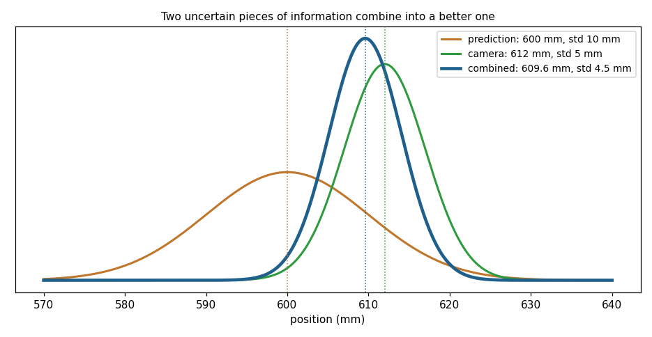

الدرس D3 · الطبقة 1: الحدس
مرشّح Kalman: دمج معلومتين غير مؤكدتين
قفزتُ إلى D3. الجزء C (عيوب المستشعر) اكتمل في معظمه، والدرس D1 (الـ state والتخمين والتنبؤ) كان في A1 الطبقة 2، والدرس D2 (الفرق المحدود fd) كان في A1 الطبقة 3. فنبدأ من أول شيء جديد: مرشّح Kalman. (إن أردتَ أن أعود إلى C5 L3 فقل.)
جواب سؤال C5 الأخير: «paired» يضيّق المجال لأن الصعوبة المشتركة بين الطريقتين تُلغى عند أخذ الفرق على الإطلاق نفسه. والـ EKFان متشابهان جداً فأخطاؤهما شبه متطابقة ولا يبقى في الفرق إلا القليل، أما fd مقابل EKF فيختلفان كثيراً فيبقى الفرق متقلباً.
1. لدينا معلومتان عن مكان الكرة
- التنبؤ: من آخر تخمين ومن قوانين الحركة نتوقع أن الكرة الآن عند 600 mm. لكننا لسنا واثقين تماماً: الخطأ النموذجي 10 mm.
- الكاميرا: قاست 612 mm، وخطأ الكاميرا النموذجي 5 mm.
أيهما نصدّق؟ لا هذا ولا ذاك وحده. نريد دمجهما.
2. الدمج: الثقة بحسب الدقة
الأدق يأخذ وزناً أكبر. الكاميرا (5 مم) أدق من التنبؤ (10 مم)، فنقترب منها أكثر. النتيجة في الرسم: المنحنى الأزرق، حوالي 609.6 mm، أقرب إلى الكاميرا، وأضيق من الاثنين (انحرافه 4.5 mm أقل من 5 و10). أي أن الدمج أعطانا معلومة أفضل من كل واحدة منفردة.

3. هذا هو مرشّح Kalman باختصار
في كل إطار يفعل المرشّح شيئين متكررين:
- التنبؤ (predict): يحرّك التخمين إلى الأمام بالفيزياء. وكلما انتظرنا ازدادت عدم الثقة بالتنبؤ (لأن النموذج غير كامل).
- التصحيح (correct): حين يصل قياس جديد، يدمجه مع التنبؤ بحسب الثقة. وبعد الدمج تنقص عدم الثقة.
ثم يكرر. وفي الأجزاء القادمة سنرى لماذا الأوزان تأتي من الدقة، وكيف تُحسب، وكيف تظهر السرعة (التي لا نقيسها) من هذا الدمج.
4. الأرقام نفسها (سنبرهنها في الطبقة 3)
التباينان: التنبؤ P = (10 mm)2 = 1×10-4 m2، الكاميرا R = (5 mm)2 = 2.5×10-5. الوزن (الكسب) K = P/(P + R) = 0.8. التخمين الجديد: 0.600 + 0.8 × (0.612 − 0.600) = 0.6096. والتباين الجديد (1 − K) P = 2×10-5، أي انحراف 4.47 mm. وهذا المثال نفسه الذي رأيناه في أول محادثتنا عن الـ cvkf.
سؤال للتأكد
لو كانت الكاميرا أسوأ (R = (20 mm)2) والتنبؤ نفسه (10 mm)، فهل تتوقع أن يقترب الناتج من التنبؤ أم من الكاميرا؟ ولماذا؟
القادم: D3 الطبقة 2 (التعريفات الدقيقة: الـ state والتباين P وQ وR، وخطوتا predict وcorrect).